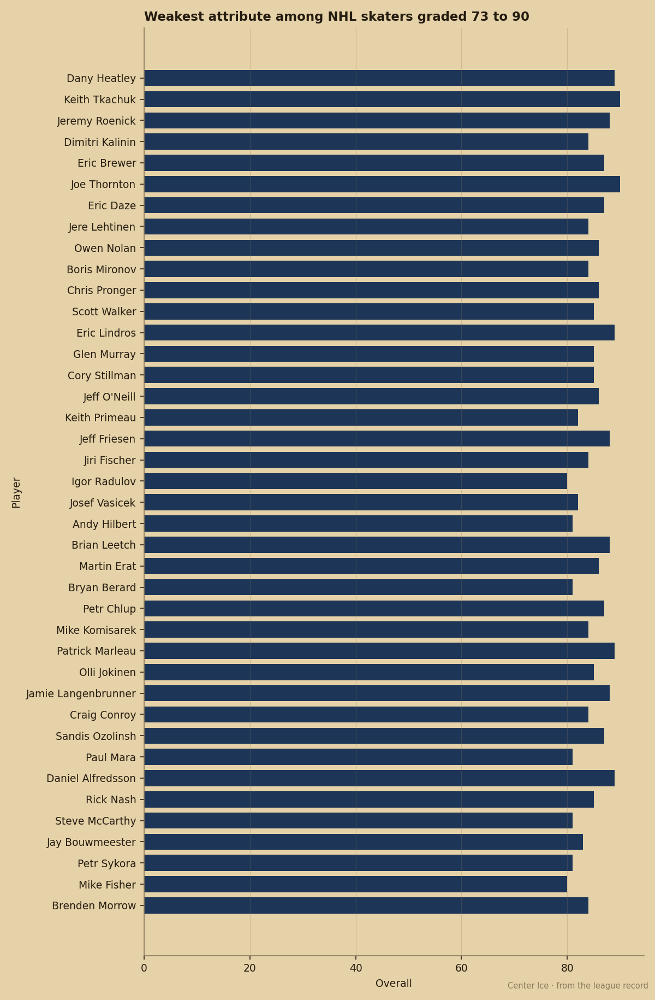
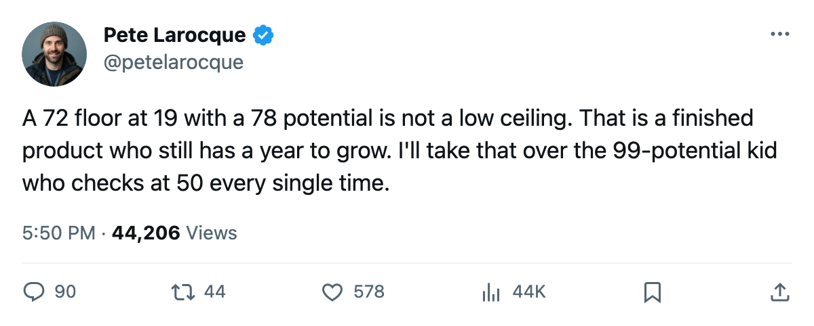

The 2006 Draft Has a Floor Problem. Viktor Latypov Is the Fix.
The Junior Bureau's top prospects average a floor near 56. Latypov's is 72, and his potential is 78.
Viktor Latypov will sit somewhere on the 2006 board. The Junior Bureau grades him at 78 potential, which is the 29th-highest in the class. His lowest attribute is speed at 72. No skater in the Bureau's top 40 carries a higher floor.
The 72 matters more than the 78. The gap between floor and potential measures how much work is left, and Latypov's is 6 points. Toni Kuki's is 49. The 2006 draft is full of 49-point gaps at the top, and the teams that draft high this June are betting on them.

Kuki carries the class's highest potential at 99, but his checking grade sits at 50. Sergej Balodis has the same potential (96) with a shot power of 50. Valeri Bunka at 96 potential has speed of 61 and checking of 81, a 20-point spread inside his own body. These are players with 96 potential who might not survive a third shift in the NHL tomorrow. The Bureau thinks they will grow into it. Maybe.
Latypov has 78 potential. His attributes run from 72 to 82. Speed 74, accuracy 81, shot power 72, passing 77, puckhandling 81, checking 82. Every number is within 10 of every other. The Bureau does not grade a 19-year-old with attributes in that band unless he is close to finished. The gap of 6 is the smallest among all 40 skaters.
| Prospect | Potential | Floor | Gap | Lowest attribute |
|---|---|---|---|---|
| Viktor Latypov | 78 | 72 | 6 | SPEE 72 |
| Daniel Lindgren | 90 | 66 | 24 | SHPW 66 |
| Karel Kotalik | 91 | 64 | 27 | PASS 65 |
| Valeri Bunka | 96 | 61 | 35 | SPEE 61 |
| Samu Seva | 87 | 51 | 36 | ACCU 51 |
| Toni Kuki | 99 | 50 | 49 | CHKG 50 |
| Sergej Balodis | 96 | 50 | 46 | SHPW 50 |
I put Karel Kotalik above the 95-potential prospects in my mock from last week. Kotalik is 91 with a 64 floor, the highest of the three 91s in the class. The logic was floor: a kid who checks at 84 at 19 is going to earn a roster spot somewhere, and the development will come around a working body. Latypov makes the same argument at the next tier down, but sharper. His 72 floor is 8 points above Kotalik's, and the gap is 21 points smaller.
The question at the draft is which number you trust. The 99 says the kid might be the best player on the ice in four years. The 72 says he is almost ready tonight. Those are not the same bet, and the teams that confuse them are the ones with three top-10 picks and nothing on the roster.
What the floor says about the board
The Junior Bureau's top 5 by potential is Kuki (99), Lieder (97), Balodis (96), Pirnes (96), Bunka (96). Their floors: 50, 68, 50, 50, 61. Four of those five carry a floor of 61 or below. A skater with a 50 floor in the Junior Bureau is not NHL-ready. He is a project. The teams drafting in the top five this year are all buying projects, and the one that gets the best return is the one that finds a project with the highest floor.
Björn Lieder at 97 potential has a floor of 68 (rebounding). Among goaltenders, that reads differently because the attributes carry different weights, but among skaters the only one close to Latypov's 72 is Daniel Lindgren at 66. Lindgren's gap is 24. That is the next-best story after Latypov.
There are 36 skaters and 4 goaltenders in the top 40. Latypov's 72 floor is 6 points above the next-highest skater in the class. That spread is where the value is, and no one is going to rank him 29th once the tape circulates in February.
The bet at the bottom of the first round
Latypov's potential grade will put him in the late first round or the back end of the second on most boards. A team with a late selection gets a player with the highest floor in the class and the smallest gap between what he is and what the Bureau thinks he'll become. If the development model works at all, he's a regular by 21. If it stalls, he's still got 72 everywhere and that plays somewhere.
The 99-potential kids don't have that. A 50 in checking with a 99 ceiling means the kid needs two years in the gym before a coach trusts him on a pairing, and the Bureau might be wrong about whether the gym fixes it. I would rather have the body that works today and find out how much higher the 78 goes.
